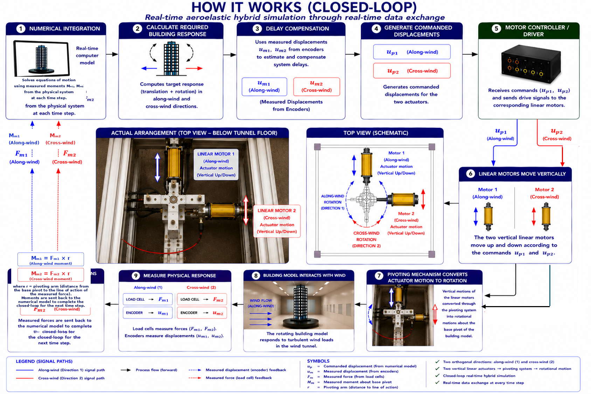
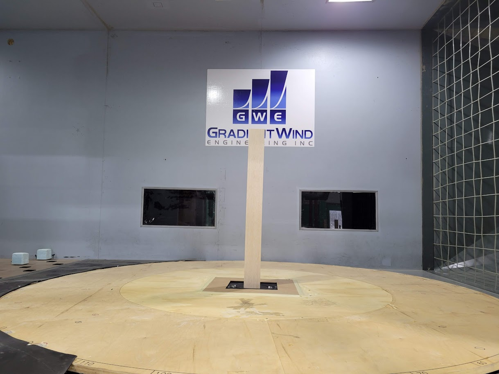
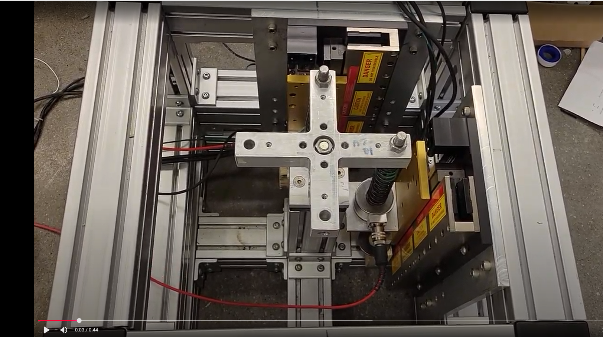

Numerical Component
Computes the required structural response and advances the numerical solution at each time step.
Receives measured moments Mₘ₁, Mₘ₂
This research developed and experimentally validated a real-time closed-loop hybrid simulation framework that integrates a numerical structural model with a physical wind-tunnel experiment. The system reproduces coupled aeroelastic response through two orthogonal linear actuators, a base-pivoting mechanism, measured force and displacement feedback, and real-time delay compensation.
The numerical model and physical wind-tunnel experiment exchange information continuously through the real-time communication and control system. Commanded actuator displacements move from the numerical model to the physical system, while measured physical response is returned to update the numerical solution at every time step.
Computes the required structural response and advances the numerical solution at each time step.
Applies delay compensation, generates actuator commands and coordinates real-time exchange between the numerical and physical systems.
Uses the building model, pivoting mechanism, two orthogonal linear motors, load cells and encoders to reproduce and measure the response.
The detailed figure below is the approved technical workflow for the system and is presented unchanged.

The building model is located above the wind-tunnel floor. The actuator and pivoting system is installed below the floor, where two orthogonal linear motors provide vertical actuator motions that are converted into rotational motion of the building model.

Physical building model positioned in the test section to interact directly with the wind field while the hybrid simulation reproduces the required structural motion.

Actual top view of the common frame, pivoting mechanism and orthogonal actuator arrangement used to impose the commanded motions.
Analytical investigation of reinforced-concrete frames incorporating shape-memory-alloy reinforcement under extreme loading.
Applying analytical models, field measurements and structural assessment to reduce uncertainty in rehabilitation, strengthening and asset-management decisions.